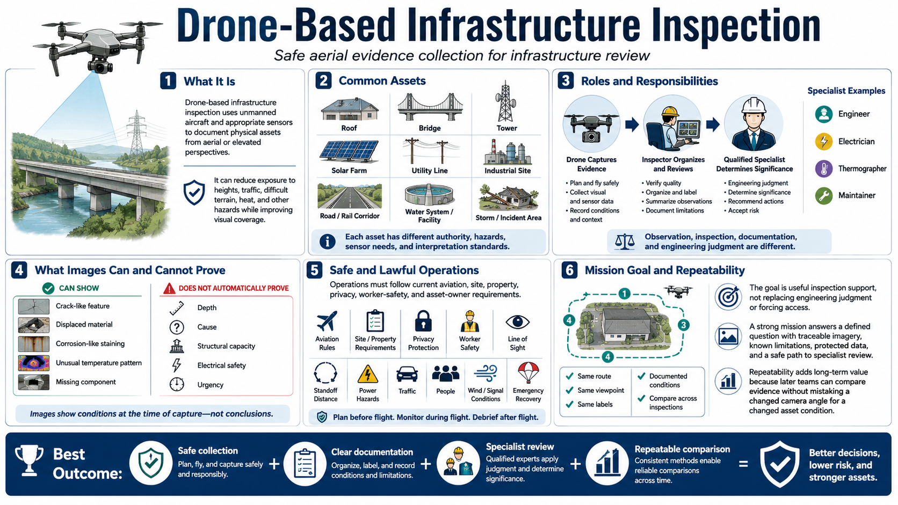

What Is Drone-Based Infrastructure Inspection?
Connecting to LMS... Progress: in progress

Narration
Drone-based infrastructure inspection uses unmanned aircraft and appropriate sensors to document physical assets from aerial or elevated perspectives. It can reduce exposure to heights, traffic, difficult terrain, heat, and other hazards while improving visual coverage.
Assets may include roofs, bridges, towers, solar farms, utilities, industrial sites, roads, rail corridors, water systems, facilities, and areas affected by storms or incidents. Each asset has different authority, hazards, sensor needs, and interpretation standards.
Observation, inspection, documentation, and engineering judgment are different. The drone captures evidence. An inspector organizes and reviews it. A qualified engineer, electrician, thermographer, maintainer, or other specialist may determine significance, cause, and repair.
A clear image can show a crack-like feature, displaced material, corrosion-like staining, unusual temperature pattern, or missing component. It does not automatically establish depth, cause, structural capacity, electrical safety, or urgency.
Operations must follow current aviation, site, property, privacy, worker-safety, and asset-owner requirements. Safe standoff, line of sight, power hazards, traffic, people, wind, signal conditions, and emergency recovery shape the mission.
The goal is useful inspection support, not replacing engineering judgment or forcing access. A strong mission answers a defined question with traceable imagery, known limitations, protected data, and a safe path to specialist review.
Repeatability adds long-term value. When routes, viewpoints, labels, and conditions are documented, later teams can compare evidence across inspections without mistaking a changed camera angle for a changed asset condition.